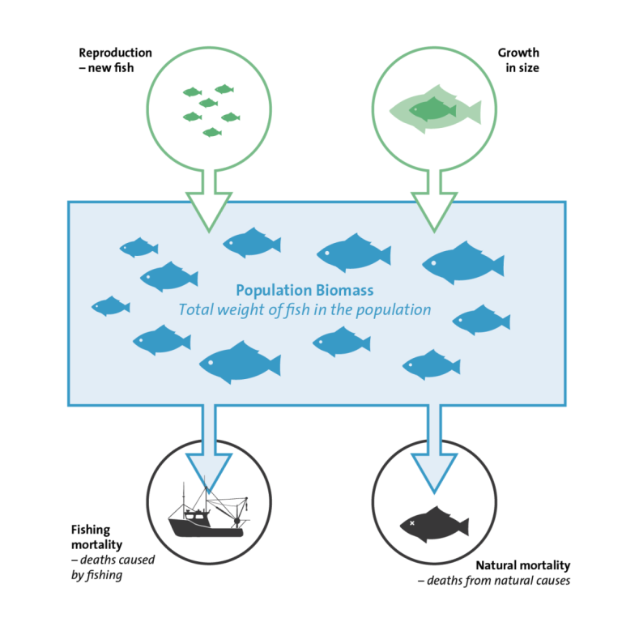
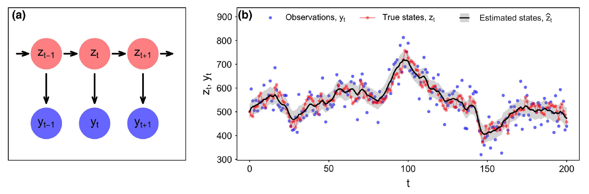

Best practices for modeling time-varying growth in state-space stock assessments
Giancarlo M. Correa\(^{1,2}\), Cole Monnahan\(^3\), Jane Sullivan\(^4\), James T. Thorson\(^3\), Andre E. Punt\(^2\)
\(^1\)AZTI, Sukarrieta, Basque Country, Spain. \(^2\)University of Washington, Seattle, WA, USA. \(^3\)Alaska Fisheries Science Center, NOAA, Seattle, WA, USA. \(^4\)Alaska Fisheries Science Center, NOAA, Juneau, AK, USA
Somatic growth
Somatic growth
- Definition: the increase in size or weight of a fish.
- Contributes to the stock biomass.
- Time-variable:
- By year, cohort, or age.
- Affected by internal and external factors.

Stockholm University Baltic Sea Centre
Somatic growth in assessment models
- Not explicitly modeled in surplus production models.
- Accounted for in VPA and SCAA using empirical weight-at-age.
- Explicitly modeled in some integrated models (commonly assumed to be time-invariant).
- Ignoring temporal variability may lead to biased results.
State-space models
State-space models
Process equation: \(E[z_t \mid z_{t-1}] = h(z_{t-1},\theta)\)
Observation equation: \(E[y_t \mid z_t]= g(z_t,\theta)\)
\(\theta\): vector of all unknown model parameters (fixed effects).
Auger-Méthé et al. (2021)
The Woods Hole Assessment Model (WHAM, Stock and Miller et al. 2021)
- Fully state-space age-structured model
- Data: catch, indices of abundance, age compositions, empirical weight-at-age, environmental covariates (Ecov)
- Separability of total catch and proportions-at-age, as well as annual F and selectivity
- Random effects in selectivity, M, NAA, Q, Ecov
- Written in TMB and R (user friendly!) ( see R package ).
Growth in state-space models
Growth in state-space models
- Goal: implement a flexible framework to model population mean length or weight at age in WHAM.
- Data:
- Length compositions
- Conditional age at length (CAAL)
- Ageing error
- Observed mean weight at age
- Parameters:
- Population mean length at age (LAA)
- Length-weight (LW) relationship
- Population mean weight at age (WAA)
Growth modeling overview
Correa et al. (2023)
LAA parametric approach
- von Bertalanffy (\(k\), \(L_{\infty}\), \(L_{\tilde{a}}\))
- Richards (\(k\), \(L_{\infty}\), \(L_{\tilde{a}}\), \(\gamma\))
Length-at-age variability incorporated through two parameters (\(SD_\tilde{a}\) and \(SD_A\)) and a transition matrix (\(\varphi_{y,l,a}\)).
Predicting random effects:
\[log(G_{t}) = \mu_{G} + \delta_{t}\]
\(G\) is a growth parameter, \(t\) represents year or cohort, \(\delta\) are random effects (\(iid\) or \(AR1\) structure).
LAA nonparametric approach
Population mean length at age (\(L_{a}\)) assumed to be fixed effects. \(SD_\tilde{a}\) and \(SD_A\) still needed.
Time variability can be modeled by predicting random effects:
\[log(\hat{L}_{y,a}) = \mu_{L_{a}} + \delta_{y,a}\]
\(\delta_{y,a}\) can be \(iid\), \(2dAR1\), or \(3dGMRF\).
LAA semiparametric approach
- Use parametric approach (without random effects) to calculate \(L_{y,a}\).
- Predict random effects on \(L_{y,a}\):
\[log(\hat{L}_{y,a}) = \mu_{L_{y,a}} + \delta_{y,a}\]
\(\delta_{y,a}\) can be \(iid\), \(2dAR1\), or \(3dGMRF\).
WAA parametric
Use the LW relationship:
\[w_l = \Omega_1 l^{\Omega_2}\]
Random effects on \(\Omega_1\) and \(\Omega_2\) can also be predicted.
Use transition matrix to calculate population mean weight at age:
\[\hat{w}_{y,a} = \sum_l \varphi_{y,l,a}w_l\]
\(\hat{w}_{y,a}\) can also be fitted to \(\bar{w}_{y,a}\) (observed mean weight at age)
WAA nonparametric
Like the LAA nonparametric. Population mean length at age (\(w_{a}\)) assumed to be fixed effects.
Time variability can be modeled by predicting random effects:
\[log(\hat{w}_{y,a}) = \mu_{w_{a}} + \delta_{y,a}\]
\(\delta_{y,a}\) can be \(iid\), \(2dAR1\), or \(3dGMRF\).
More new features
Selectivity
Originally, only selectivity-at-age functions were available.
New functions added:
Age double normal (6 parameters).
Length logistic (2 parameters).
Length decreasing logistic (2 parameters).
Length double normal (6 parameters).
More new features
Environmental covariates
New growth-related parameters can be linked to an environmental covariate. For example:
\[P_t = P exp(\beta_1 X_t)\]
\(P\) is the base state (parameter) value. Other links are also available (polynomials). Lags can be modeled.
Applications
Methods applied to three stocks in Alaska:
- Gulf of Alaska Walleye pollock: age data, observed mean weight at age, WAA nonparametric.
- Gulf of Alaska Pacific cod: length and CAAL data, LAA parametric.
- Eastern Bering Sea Pacific cod: length data, LAA parametric with time-varying \(L_\tilde{a}\).
See Correa et al. (2023) Modeling time-varying growth in state-space stock assessments. ICES Journal of Marine Sciences.
Good practices
Simulation experiment
Goal: provide guidelines for growth modeling in state-space assessment models under diverse scenarios.
- Data type: age compositions vs length compositions vs CAAL.
- Data source: fishery vs survey.
- Data quality: data rich vs data poor.
- Modeling approach: parametric vs nonparametric vs semiparametric vs Ecov.
- Time-varying parameter: changes in \(k\), \(L_{\infty}\) or \(L_{\tilde{a}}\).
Simulation experiment
Methodology:
Operating model: simulates the true population dynamics. Changes in growth by varying \(k\), \(L_{\infty}\) or \(L_{\tilde{a}}\).
Sample data from operating model.
Estimation model uses sampled data with assumptions on the population dynamics.
Preliminary results
Conclusions
- Expansion of the applicability of state-space assessment models.
- Implementation of a flexible framework to model time-varying growth in state-space assessment models.
- Recommendations to model time-varying growth under diverse scenarios.
Thanks


Tim Miller, Brian Stock, Jim Ianelli, Steve Barbeaux, Peter Hulson
Contact:
gmoron@azti.es
Find more information:
tinyurl.com/wham-growth
ICES Annual Sciences Conference 2023